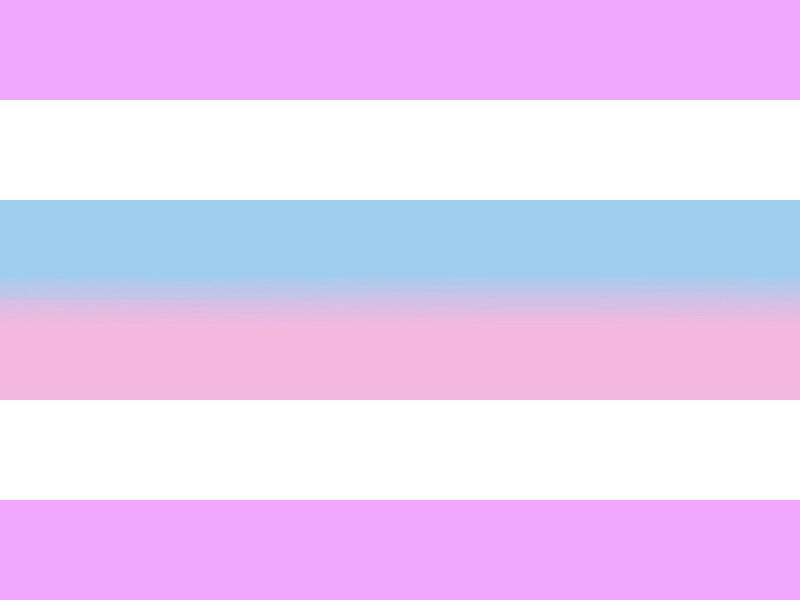

Welcome to the Pride Flag Search!
Disclaimer: This website doesn't and can't include every flag and its corresponding label. Many identities and experiences don't even have specific labels or flags, but that doesn't make them any less valid. If you would like to suggest that a flag and its related identity be added to this website, please fill out the suggestion form.
Instructions: To use the Pride Flag Search, you can type in an identity with the search bar. You can also filter by flag colors, number of stripes, shapes, and category. (Note: A chevron or v-shape does not count as a stripe, but it does count as a shape.)
-

6-Stripe Pride Flag -

7-Stripe Pride Flag -

8-Stripe Pride Flag -

Aromantic asexual (aroace) -

Agender -

Agender (alternate) -

Aromantic -

Aromantic (old) -

Aromantic (old) -

Asexual -

Bisexual -

Demiboy -

Demigirl -

Demiromantic -

Demisexual -
Gay -
Gay (alternate) -

Gay (old) -

Genderfluid -

Genderqueer -

Grayromantic -

Graysexual -

Intersex -

Intersex (old) -

Lesbian -

Lesbian (alternate) -

Lesbian (old) -

Lesbian (old) -

Lesbian (old) -

Lesbian (old) -

Nonbinary -

Pansexual -

Queer -

Queer (old) -
Queer (alternate) -

Transgender
See this website's README.md file for image attributions.